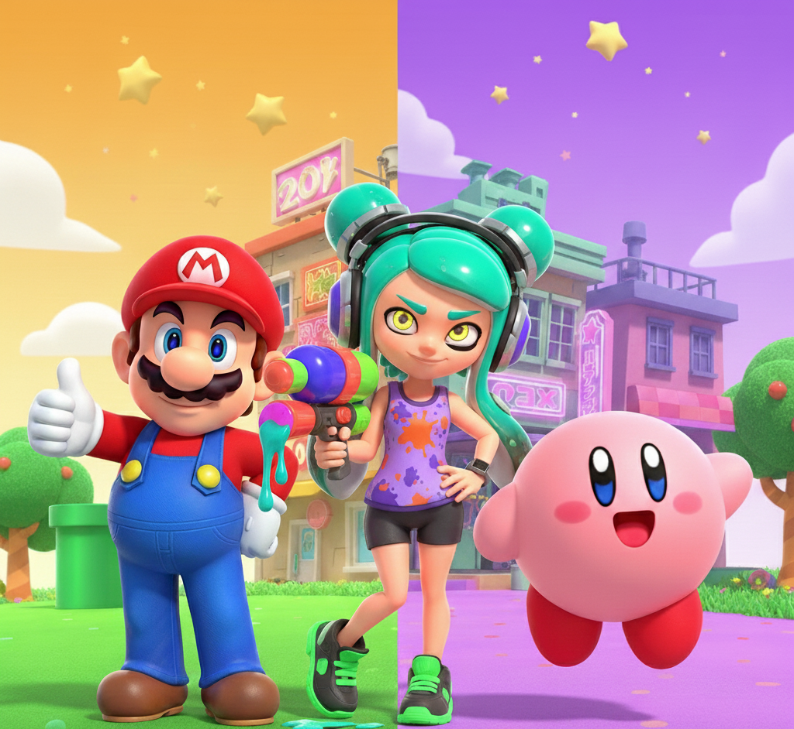
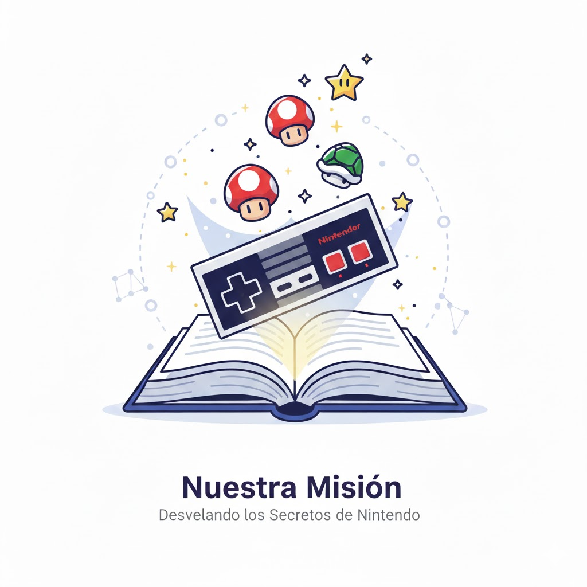
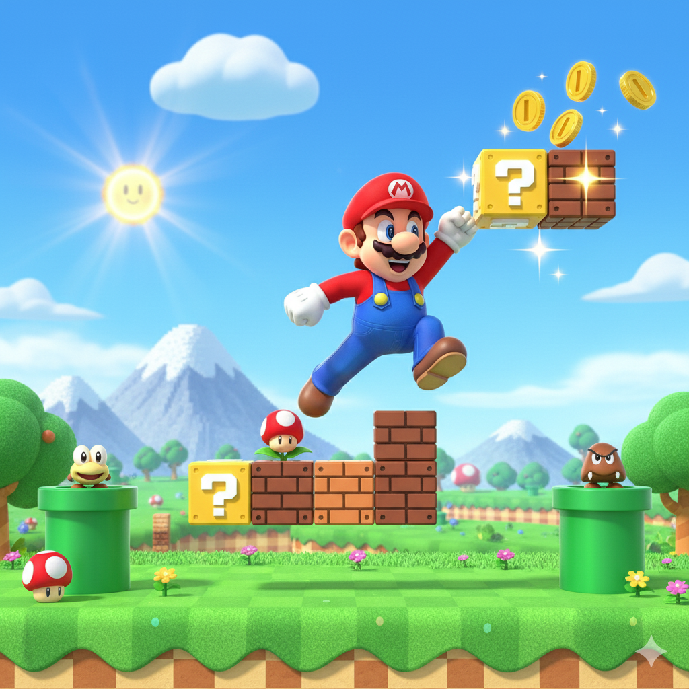
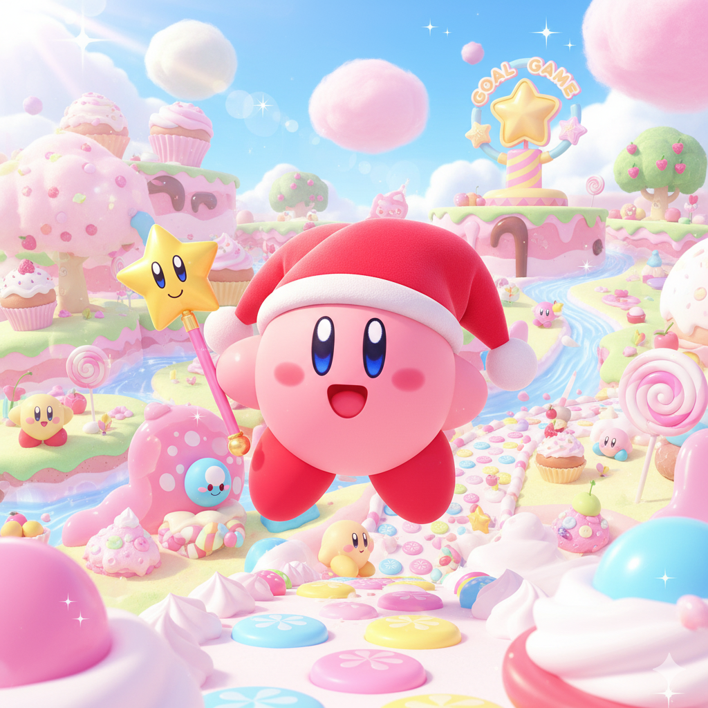
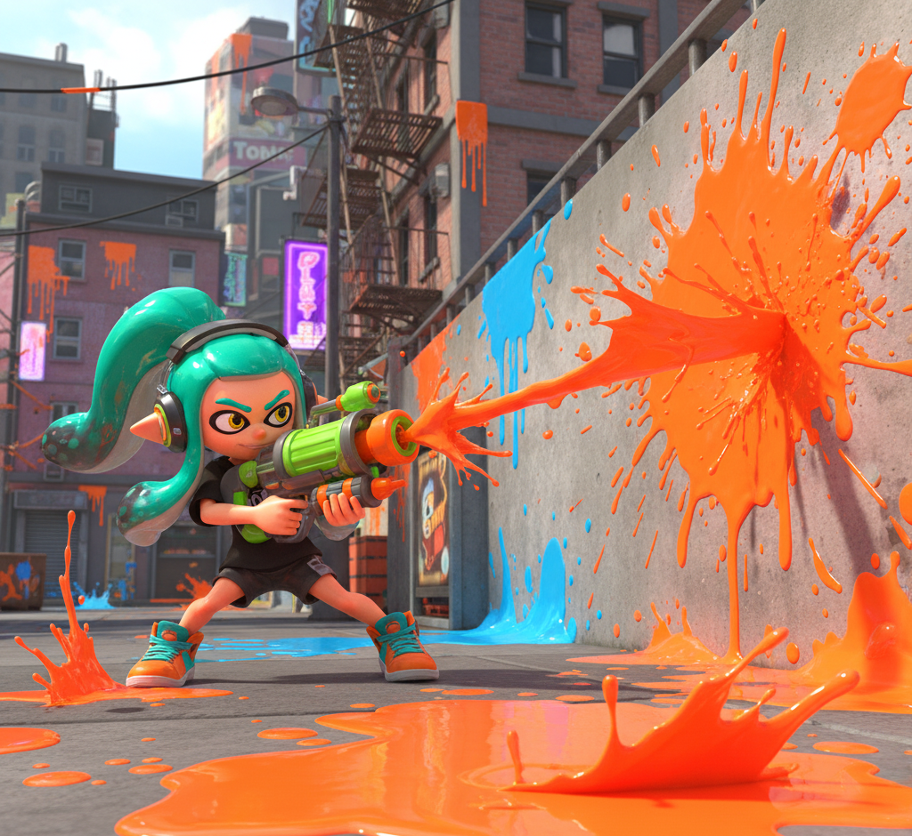
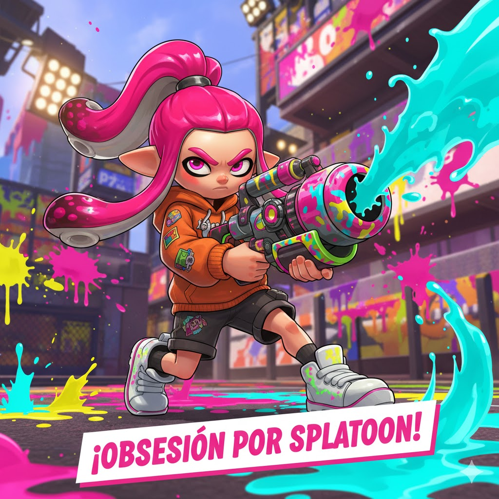
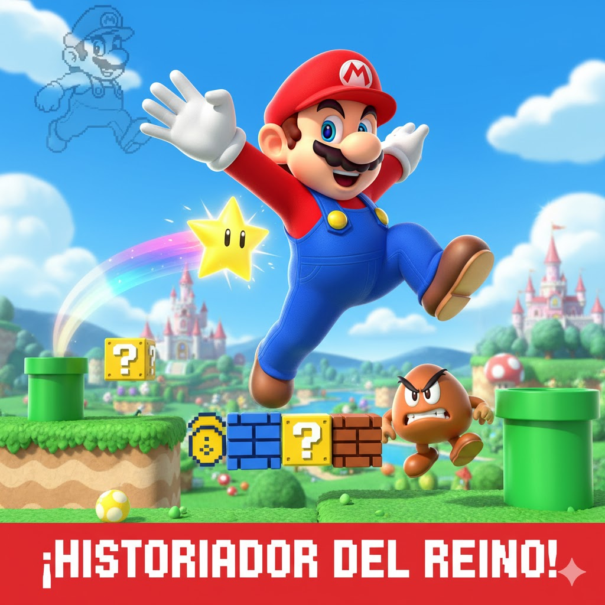
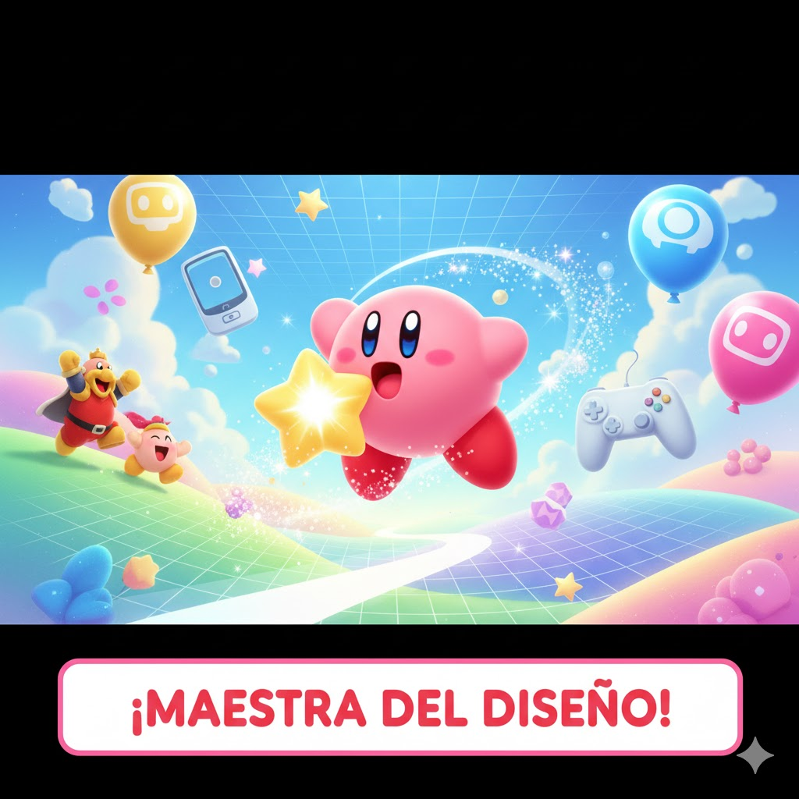

Sobre NintendoManía: La Pasión por los Videojuegos Hecha Web
Nuestra Historia: El Origen de la Manía
NintendoManía nació en 2025 de un grupo de fans y profesionales que nos frustramos buscando análisis realmente profundos y bien organizados sobre el lore de nuestras sagas favoritas (Mario, Splatoon y Kirby).

Nuestro Juramento de Calidad
Creemos que las historias de los videojuegos merecen tener una buena página web dedicada la cual esté bien estructurada y sea accesible.
Nuestro juramento es simple: máxima precisión en cada dato y 100% amor por Nintendo.

Nuestros Pilares
Siempre asegurando la calidad
La calidad de NintendoManía se basa en ser superdetallistas con los datos del juego y obsesivos con la experiencia del lector.
A continuación te explicamos cómo trabajamos:
Rigor Cronológico:
Cada dato del lore se verifica con fuentes originales de Nintendo. Si no es canon o está mal, ¡no se añade! Ofrecemos el lore más digno en nuestras cronologías.

Estructura Clara y Mantenible:
Organizamos todo el contenido de forma lógica y modular. Es decir, la información está siempre donde esperas encontrarla, facilitando la búsqueda de datos específicos de cada saga.

Diseño Universal y Funcional:
Nos aseguramos de que el sitio sea completamente accesible para todo tipo de usuarios y que funcione de manera fluida en cualquier dispositivo.

Conoce al Equipo: Los Maníacos Tras la Web
Somos profesionales que aplicamos nuestros superpoderes de programación y diseño a documentar las mejores sagas del mundo.
Miembro 1 (Irene F.L) - La Arquitecta y Jefa de Contenido
Saga Favorita: Splatoon.

Mi trabajo es el esqueleto de esta web, soy la responsable de que la estructura sea perfecta y funcione.
Siempre he sido fanática de Splatoon y por ello he puesto mucho empeño en este proyecto web.
Miembro 2 (David) - El Historiador y Experto en Lore
Saga Favorita: Super Mario Bros.

Soy el guardián de las cronologías ya que me he asegurado de que cada salto de Mario sea históricamente preciso.
Mi objetivo es que la página esté lo más completa posible en cuanto a información y curiosidades se refiere.
Miembro 3 (Lucía) - La Maestra del Diseño y la Experiencia
Saga Favorita: Kirby.

Yo me encargo de que todo luzca bien en tu móvil, tu tablet y tu escritorio sin que exista ningún fallo.
Hago que la navegación sea tan suave y placentera como el vuelo de Kirby.